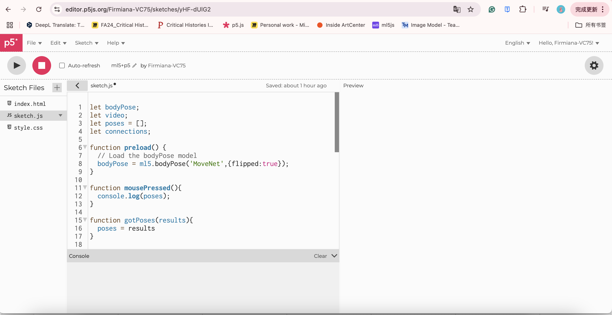
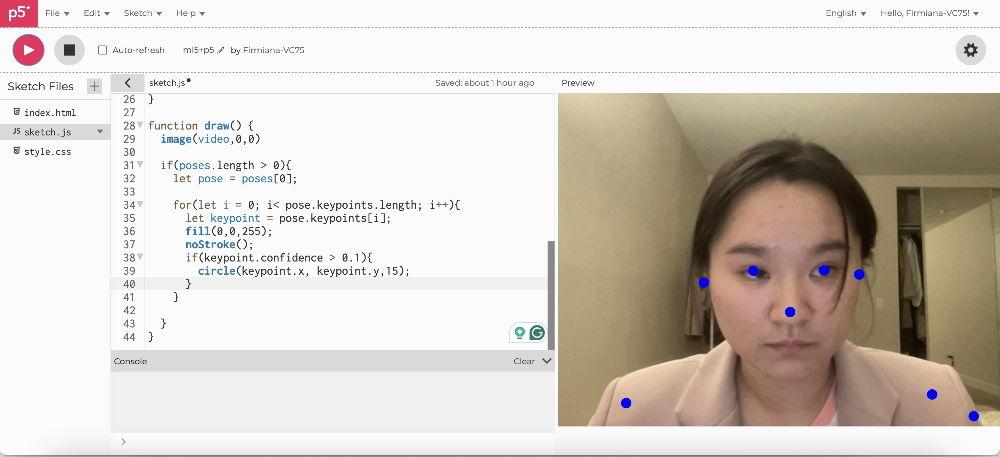
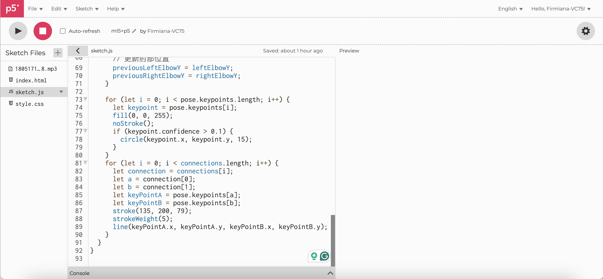
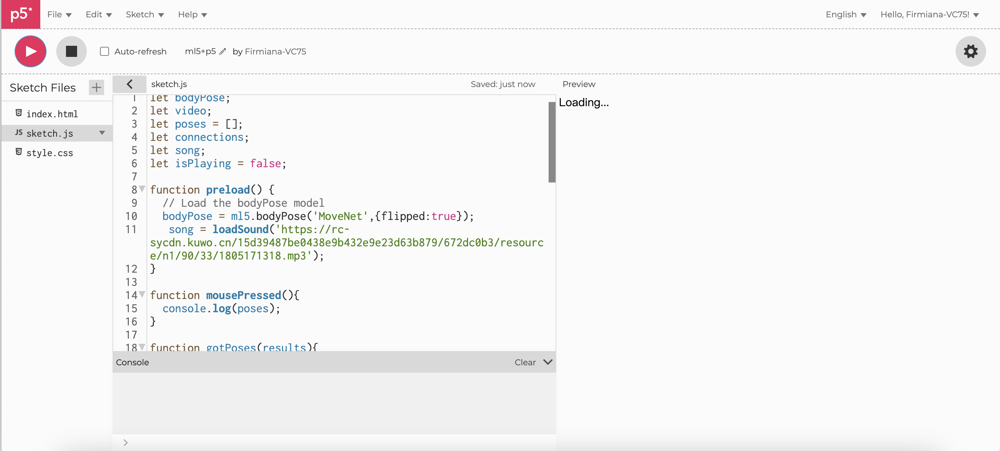
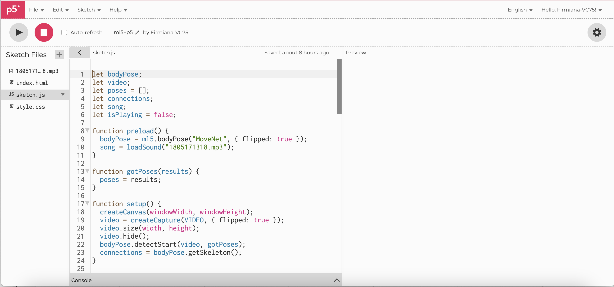
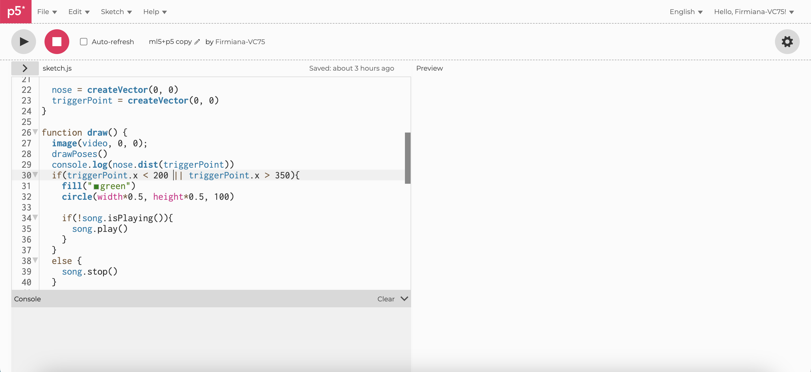

NO CHATGPT!
I want to control the music playing through body movements. I couldn't find a suitable tutorial for this and I chose to use chatgpt, but the code given by chatgpt is not only complicated but also doesn't achieve the effect I want.

In class, I learned about hand recognition. To explore more functionality, I chose to do a coding for body pose.
I started by setting some points to recognize the contours of the body.
After determining the location of the dots, I used the connections to create more visible body parts.
That's when I ran into a problem. My pre-loaded music wouldn't play. I copied the URL directly and it had no effect.
I have to upload local files to p5js to get the system to detect and play them.
I want to control the music playing through body movements. I couldn't find a suitable tutorial for this and I chose to use chatgpt, but the code given by chatgpt is not only complicated but also doesn't achieve the effect I want.
In class, we find a new way out. It's so simple and easy. We set up a trigger point so that it can detect my pose.
